The Basics¶
This tutorial assumes that you know most of these things. If you don’t, that’s not a problem at all and you can just keep the basics page open while you read other chapters.
Functions¶
Here’s a typical math function:


There is no special syntax for defining a function. All we have is the equal sign, and when defining a function we just say that its value at x is equal to something.
If you’re familiar with a functional programming language like Haskell, then you’ll probably realize that the above math looks a lot like this Haskell session:
Prelude> let f x = 2*x
Prelude> f 6
12
Prelude>
If you’re feeling like WTF is this, here’s a Python session that should make everything clear.
>>> def f(x):
... return 2*x
...
>>> f(6)
12
Quick note about f(x) versus f x: if you define your own function
called  or
or  you should use
you should use  , but you can do e.g. or
, but you can do e.g. or
 with some “special” functions for historical reasons.
with some “special” functions for historical reasons.
Also note that mathematicians prefer single-letter variable names because math was originally written on paper, and writing long things by hand sucks. Again, this doesn’t apply to the “special” functions.
+, -, *, /¶
I’m sure you already know how + and - work. Just be careful when you have a minus in front of parentheses, e.g. 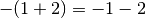.
In this tutorial, a/b is written as 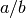 or , and a*b is
written as or simply .
Some handy stuff:
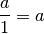
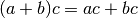
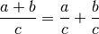
You can use these rules left-to-right or right-to-left. For example, if you want to calculate 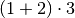 you know you could also do 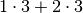, but you can also calculate like .
Note that there is no  rule; that
doesn’t work.
rule; that
doesn’t work.
Here’s an easy way to work with long  and
and  things: if you have 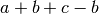
you can move the 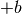 and 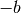 to the beginning and get 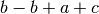 (where
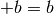), and realize that and the answer is just . Later you’ll
notice that we end up with this 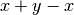 pattern surprisingly often and things
become nice and simple.
things: if you have 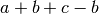
you can move the 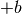 and 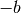 to the beginning and get 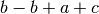 (where
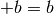), and realize that and the answer is just . Later you’ll
notice that we end up with this 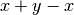 pattern surprisingly often and things
become nice and simple.
Similarly, when working with multiplication and division just look at which
numbers are below a division line and which aren’t. For example, if we have
 we know that’s
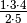 because 2 and 5 were below the lines but
other numbers weren’t.
we know that’s
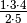 because 2 and 5 were below the lines but
other numbers weren’t.
If both the top and bottom are being multiplied by something you can get rid of
that multiplier. For example (here  is
is !=):
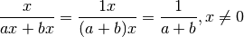
You can add, substract and multiply any numbers together however you want, but remember that you cannot divide anything by zero. See Numberphile’s awesome zero video if you’re wondering why.
Negative numbers behave like this when multiplied and divided. Note how the two -‘s cancel out.
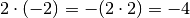
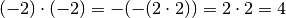

Absolute Value¶
The absolute value of  is in math and something like
is in math and something like abs(x) or
Math.abs(x) in most programming languages. It’s easiest to think of the
absolute value as stripping off the minus sign. For example, 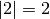 and
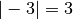.
Powers and Square Root¶
is x**y or pow(x, y) and 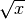 is sqrt(x) in most
programming languages.
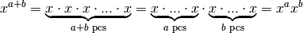
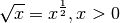
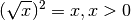
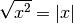
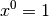
You’re probably wondering how the heck our 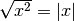 rule works. This example should explain everything:
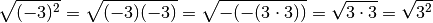
If you’re wondering why anything to the power of 0 is 1, you can do e.g.
. The equation should be true with any , so
must be 1 because .
Solving Equations¶
For example, if you know that you can find like this:

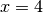
I started by substracting 1 from both sides and then I divided everything by 2. You can add and substract any numbers you want, but you cannot multiply or divide by zero; multiplying by zero would give and make anything true.
You can also apply most functions to both sides. For example, you can do this
with  :
:
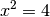
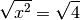
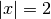
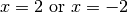
See Also¶
This chapter shows only the things you need in the rest of this tutorial, but this cheat sheet is more complete.